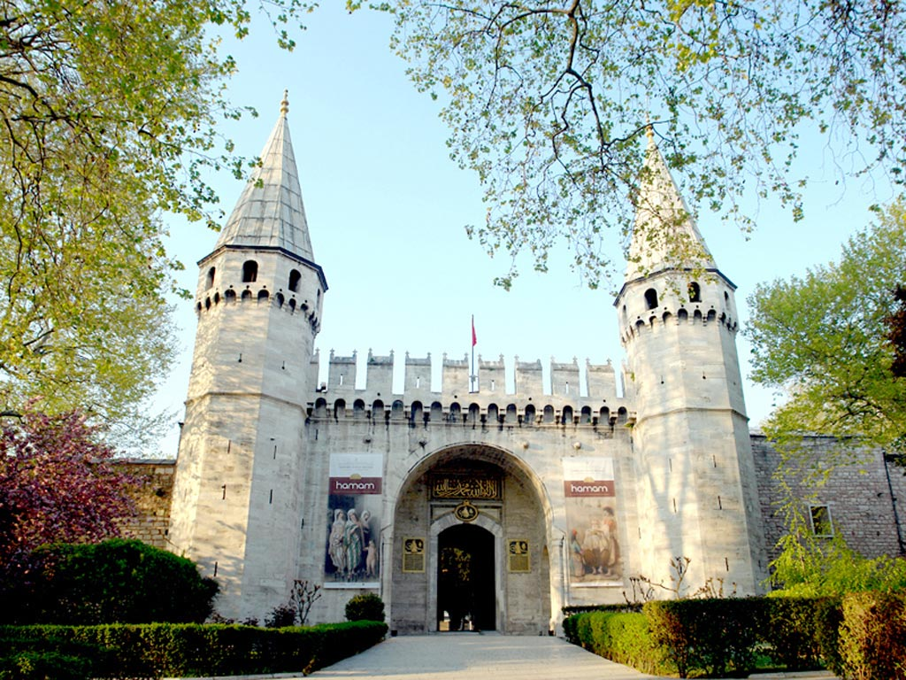
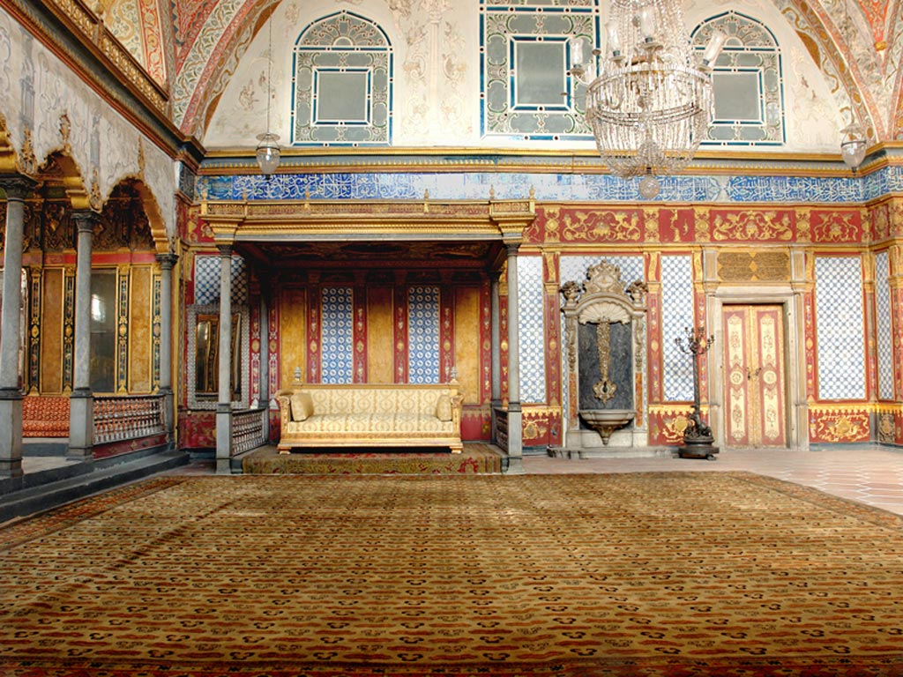
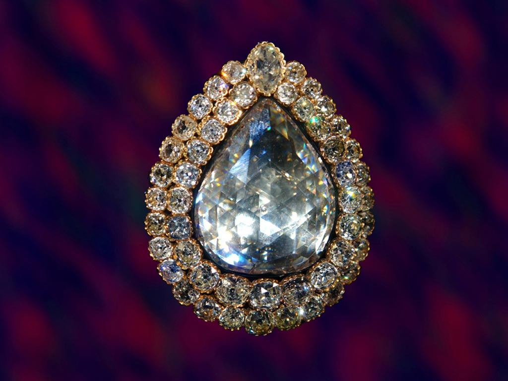

Topkapı Sarayı Müzesi
AçıklamaTopkapı Sarayı, Osmanlı Sultanlarının ikametgâhı, devletin yönetim ve eğitim merkezidir. İstanbul fatihi Sultan II. Mehmed tarafından 1460-1478 tarihleri arasında yaptırılmış olan ve zaman içerisinde bazı ilavelerin yapıldığı sarayda, Osmanlı padişahları ve Saray halkı 19'uncu yüzyıl ortalarına kadar ikamet etmiştir. Topkapı Sarayı, Osmanlı monarşisi 1922’de kaldırıldıktan sonra, 3 Nisan 1924’te Mustafa Kemal Atatürk’ün emriyle müzeye dönüştürülmüştür.Fatih Sultan Mehmet ve Topkapı Sarayı Fatih Sultan Mehmed, fetihten sonra Beyazıt’ta bugünkü İstanbul Üniversitesi’nin bulunduğu yerde, daha sonra “Eski Saray” olarak anılacak olan bir saray yaptırmıştır. Fatih, bu ilk saraydan sonra, önce Çinili Köşk’ü, ardından da yapımı tamamlandığında yerleşecek olduğu Topkapı Sarayı’nı inşa ettirmiştir. Fatih, bu saraya Osmanlıca'da “Yeni Saray” anlamına gelen “Saray-ı Cedid” ismini vermiştir. Yeni Saray’a Topkapı Sarayı denmesi ise şöyle gerçekleşmiştir: Sultan I. Mahmud tarafından Bizans surlarının yakınına yaptırılan ve önündeki selam topları nedeniyle “Topkapusu Sahil Sarayı” denilen büyük ahşap sahil sarayı bir yangında tamamen kül olunca, bu sarayın ismi yeni saraya verilmiştir.  Topkapı Sarayı Mimarisi Yüzyıllarca gelişen ve büyüyen Topkapı Sarayı’nın planının belirlenmesinde Osmanlı devlet felsefesi ile Saray-tebaa ilişkilerinin büyük rolü olmuştur. Ayrıca Topkapı’nın ilk inşa edildiği dönemde, Fatih Sultan Mehmed’in babası Sultan II. Murad’ın Tunca Nehri kenarında yaptırmış olduğu ve günümüze sadece kalıntıları ulaşan Edirne Sarayı’nın planından olduğu kadar ihtişamından da esinlenildiği bilinmektedir. Topkapı Sarayı, mütevazı bir saraydır; imparatorluğun büyük harcamaları daha çok muhteşem camiler, kışlalar, köprüler, kervansaraylar ve konaklama tesisleri için yapılmıştır. 16. yüzyılın ünlü mimarı Mimar Sinan bile bu sarayda sadece bir bölüm inşa etmiştir. Ama sarayın kendine özgü binaları, nefis çinileri ve tabiatla iç içe geçmiş yapısı kadar, Sarayburnu’ndaki konumu da ona doğal bir güzellik ve ihtişam verir.  Topkapı Sarayı Bölümleri Topkapı Sarayı’nın planı; çeşitli avlular ve bahçeler arasında devlet işlerine ayrılmış daireler, hükümdarın ikametgâhı olan bina ve köşkler ile sarayda yaşayan görevlilere mahsus binalardan oluşur. Marmara Denizi, İstanbul Boğazı ve Haliç arasında, İstanbul yarımadasının ucunda bulunan Sarayburnu’ndaki Bizans akropolü üzerine inşa edilen Saray, 1400 metre uzunluğundaki “Sur-ı Sultani” denilen yüksek ihata duvarları ile karadan, deniz tarafından ise Bizans surlarıyla çevrilmiştir. Saray’ın kapladığı alan yaklaşık 700 bin metrekaredir. Alay Meydanı, Aya İrini, Bâb-ü's Selâm, Bâb-ı Hümâyun, Divan Meydanı, Kubbealtı (Divan-ı Hümayun), Adalet Kasrı, Dış Hazine, Zülüflü Baltacılar Ocağı, Has Ahırlar, Beşir Ağa Camii ve Hamamı, Saray Mutfakları, Babüssaade, Sohum Kalesi Kitabesi, Enderun Avlusu, Arz Odası, III. Ahmed Kütüphanesi (Enderun Kütüphanesi), Fatih Köşkü (Enderun Hazinesi), Hazine Koğuşu, Has Oda ve Kutsal Emanetler Dairesi, Ağalar Camii, Kilerli Koğuşu, Kuşhane ve Harem Kapısı, Has Oda Koğuşu/Padişah Portreleri, Dördüncü Avlu, Sünnet Odası, Revan Köşkü, Bağdat Köşkü, İftariye Kameriyesi (Mehtaplık), Sofa Köşkü, Sofa Camii, Mecidiye Köşkü, Hekimbaşı Odası / Baş Lala Kulesi, Esvap Odası, Harem, Dolaplı Kubbe / Harem Hâzinesi / Haremeyn Hâzinesi, Şadırvanlı Sofa, Kara Ağalar Mescidi, Kara Ağalar ve Kara Ağalar Taşlığı, Cümle Kapısı, Valide Taşlığı, Kadın Efendi Daireleri, Valide Sultan Dairesi, Hünkâr ve Valide Sultan Hamamları, Hünkâr Sofası, III. Murad Has Odası, I. Ahmed Has Odası, Yemiş Odası / III. Ahmed Has Odası, Çifte Kasırlar / Veliahd Dairesi, Altınyol, Cariyeler ve Kadın Efendiler Taşlığı, Gözdeler Dairesi ve Mabeyn Taşlığı, Arabalar Kapısı / Kızlar Kapısı, Nöbet Yeri ve Cariyeler Koridoru bu muazzam yapının bölümleri arasındadır.  Topkapı Sarayı Müzesi’ndeki Koleksiyonlar Nelerdir? Topkapı Sarayı’nın olağanüstü zenginlikteki koleksiyonları ve son derece ilgi çekici hikâyelerle örülü tarihi bu sarayı dünyanın en görülmeye değer saraylarından biri kılar. İmparatorluk Hazinesi, Avrupa Porselenleri ve Camları, Bakır ve Tombak Mutfak Eşyası, Çin ve Japon Porselenleri, Gümüşler, Hırka-i Saadet Dairesi ve Kutsal Emanetler, İstanbul Cam ve Porselenleri, Padişah Elbiseleri, Padişah portreleri ve resim koleksiyonu, Silahlar müzede sergilenen değerli koleksiyonlar arasındadır. |
|
Yaz Dönemi 1 Nisan – 2 Ekim Açılış Saati: 09:00 Kapanış Saati: 19:00 |
Kış Dönemi 2 Ekim – 1 Nisan Açılış Saati: 09:00 Kapanış Saati: 17:00 |
|
Gişe Yaz / Kış Kapanış Saatleri Yaz Dönemi: 18:00 Kış Dönemi: 16:00 |
Adres: Sultanahmet, Fatih / İSTANBUL Telefon:0 (212) 512 04 80 Faks: 0 (212) 528 59 91 |
|
Topkapı Sarayı Kapalı Olduğu Günler: Müze Salı günleri ziyaretçilere kapalıdır. |
Topkapı Sarayı Müzesi : 100 TL Harem bölümü : 70 TL Aya İrini Müzesi : 60 TL |